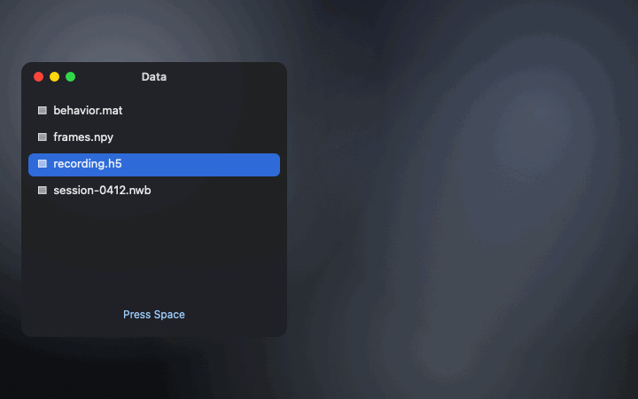

SciLook
Quick Look for scientific data. Press Space on an NWB, HDF5, MATLAB or NumPy file in Finder and see what's inside, with a plot.

free · open source · macOS 14+ · sandboxed · no permissions · no internet access
Press Space and see
- NWB and HDF5: groups, datasets, shapes, types and units, NWB session and subject facts, and a plot of the recorded data. Any size, read a little at a time.
- MATLAB .mat: v5 and v7.3, with each variable's size and class, structs and cell arrays.
- NumPy .npy and .npz: shapes, types and a plot. Pickles are never loaded.
- Opening the files: for a closer look, dropslice opens the same files in your browser.
Questions
How do I preview an HDF5 or NWB file in Finder?
Install SciLook, open it once, then select the file in Finder and press Space. Quick Look shows the file's groups and datasets with their shapes and types, NWB session and subject facts, and a plot of the recorded data. Big files are read a little at a time, so a 10 GB recording previews quickly.
Can I preview a MATLAB .mat file on a Mac without MATLAB?
Yes. SciLook previews MATLAB v5 .mat files (the default for save) and v7.3 files, with each variable's size and class, structs and cell arrays, and a plot.
Does Quick Look work with NumPy .npy files?
With SciLook it does: .npy and .npz files show their arrays' shapes and types and a plot. Pickled object arrays are never loaded, because unpickling can run code.
Is SciLook safe?
It's sandboxed with no permissions: Quick Look gives it read access to the one file being previewed. It never writes files, has no network access and runs no other programs.